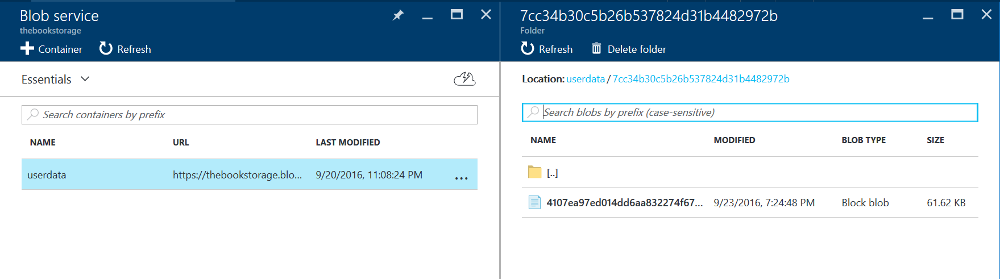
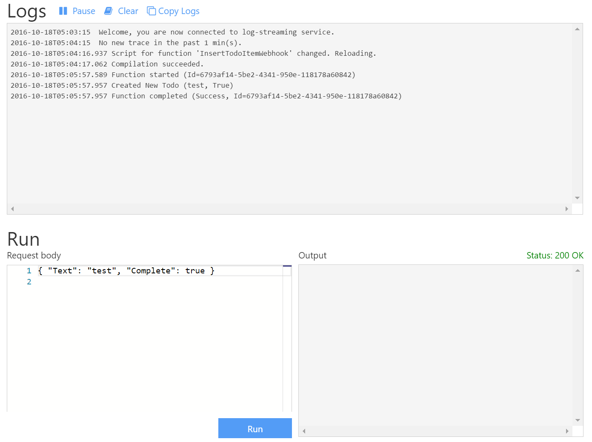

Recipes
Now that we have explored the syntax and methodologies of invoking server-side code, we can look at some very common use cases for custom code.
Storage Related Operations¶
When dealing with cloud concepts, there are multiple operating levels one can think about. At the bottom layer is Infrastructure as a Service. Most people think of this as the Virtual Machine layer, but it also incorporates basic networking and storage concepts. As you move to higher level services, you gain a lot of efficiencies by adding software components, you lose a lot of the potential management headaches, but you also lose flexibility in what you can do to the platform. At the top of the stack is Software as a Service. You may be running a helpdesk, for example, but you are completely isolated from what operating system is being run, what web services are being run, APIs that can be accessed and language that is used.
Azure Mobile Apps is an opinionated combination of a client and server SDK running on top of a standard ASP.NET based web service and is normally thought of as being a Platform as a Service. You get to choose what database to use, what tables to expose, and what programming language to use. You don't get to determine when the operating system is patched or what patches are applied. It's a middle of the road between SaaS and IaaS.
That isn't to say we can't dip down sometimes to deal with lower level cloud services, nor to access higher level SaaS APIs. One of those times is when dealing with files. Storage is conceptually easy - you have an amount of disk and you can store files on it. However, the management of that storage is complicated. Placing that storage at the service of a scalable web application is similarly complicated. What we intend to do is develop a set of skills that make developing storage based mobile applications easy.
Blobs, Table, Queues and files¶
At the top of my list of "storage made complicated" is the cloud storage concepts. In the old days, we stored files on a file system and we didn't really have to worry about differing types of storage, redundancy and capabilities. Cloud storage tends to come in multiple flavors:
-
The base storage type is Blob Storage. Put simply, you have containers (roughly analogous to directories) and blobs (roughly analogous to files). It's the cheapest form of storage and is used for many things, including the underlying storage for virtual machine disks. Blob storage has many advantages. From a mobile perspective, developers will appreciate the upload/download restart capabilities within the SDK.
-
We've already introduced Table Storage in the last chapter. It is more analogous to a NoSQL store for storing key / attribute values. It has a schemaless design, so you can store basic JSON objects. However, it has limited query capabilities, as we discussed in the last chapter. That makes it unsuited to large scale query-driven applications.
-
You may think you want Files Storage. This provides an SMB interface to the storage layer. You would use Files Storage if you want to browse files from your PC or Mac as you can mount the file system directly from Azure Storage.
-
Finally, Queue Storage provides cloud messaging between application components. We'll get onto Azure Functions later on, during our look at Custom API. Queue Storage will definitely be coming into play then. Think of Queue Storage as the glue that ties work flow components together.
The real question is when should you use File Storage and when should you use Blob Storage. For more applications, Blob Storage is going to save you money over File Storage, so it's pretty much always the better choice. You should only be thinking of File Storage if you have other components of your system that need to access the data you upload that can only access that data via an SMB interface.
If you need to explore the data that you upload or download, you can use the Azure Storage Explorer as a standalone application or you can use the Cloud Explorer in Visual Studio.
Creating and Linking a Storage Account¶
Before we can use storage, we need to set up a storage account and connect it to our environment. This involves:
- Create a Resource Group
- Create an Azure App Service
- Set up authentication on the Azure App Service
- Create a Storage Account
- Link the Storage Account to the Azure App Service.
We've already covered the first three items in previous chapters. We've also created a storage account and linked it to the mobile backend during our look at the Storage Domain Manager. To create a Storage Account:
- Log on to the Azure portal.
- Click the big + NEW button in the top left corner.
- Click Data + Storage, then Storage account.
- Fill in the form:
- The name can only contain letters and numbers and must be unique. A GUID without the dashes is a good choice.
- The Deployment model should be set to Resource manager.
- The Account kind should be set to General purpose.
- The Performance should be set to Standard for this example.
- The Replication should be set to Locally-redundant storage (LRS).
- Set the Resource group to your existing resource group.
- Set the Location to the same location as your App Service.
- Click Create.
Just like SQL Azure, Azure Storage has some great scalability and redundancy features if your backend takes advantage of them. For example, you have the option of Premium Storage - this provides all-SSD storage that has a large IOPS performance number. You can also decide how redundant you want the storage. Azure always keeps 3 copies of your data. You can choose to increase the number of copies and decide whether the additional copies will be in the same datacenter, another datacenter in the same region or another region. We have selected the slowest performance and least redundant options here to keep the cost down on your service.
Warn
There is no "free" option for Azure Storage. You pay by the kilobyte depending on the performance and redundancy selected.
Once the Azure Storage account is deployed, you can link the storage account to your App Service:
- Open your App Service in the Azure portal.
- Click Data Connections under the MOBILE section in the settings menu.
- Click + ADD
- In the Add data connection blade:
- Set the Type to Storage.
- Click the Storage link.
- In the Storage Account selector, click the storage account you just created.
- Click the Connection string.
- In the Connection string selector, make a note of the Name field.
- Click OK.
- Click OK to close the Add data connection blade.
Click on the Application Settings menu option, then scroll down to the Connection Strings section. Note that the portal has created the connection string as an App Setting for you with the right value:
DefaultEndpointsProtocol=https;AccountName=thebook;AccountKey=<key1>
By default, the connection string is called MS_AzureStorageAccountConnectionString and we will use that throughout our examples.
The key is the access key for the storage. When a storage account is created, two keys are also created. The keys are used for secure access to the storage area. You should never distribute the storage keys nor check them into source control. If you feel they have been compromised, you should regenerate them. There are two keys for this purpose. The process of regeneration is:
- Regenerate KEY2
- Place the regenerated KEY2 in the connection string and restart your App Service.
- Regenerate key1
- Place the regenerated KEY1 in the connection string and restart your App Service.
In this way, your App Service will always be using KEY1 except during regeneration. You can avoid the restart of your App Service by providing a management interface that sets the Account Key for the App Service.
Tip
For local development, there is the Azure Storage Emulator. The connection string when using the Azure Storage Emulator is UseDevelopmentStorage=true.
It's normal to add the storage connection string to the Web.config file with the following:
<connectionStrings>
<add name="MS_AzureStorageAccountConnectionString" connectionString="UseDevelopmentStorage=true" />
</connectionStrings>
This will be overwritten by the connection string in the App Service Application Settings. Effectively, you will be using the Azure Storage Emulator during local development and Azure Storage when you deploy to Azure App Service.
The Shared Access Signature (SAS)¶
The storage account key is kind of like the root or Administrator password. You should always protect it, never send it to a third party and regenerate it on a regular basis. You avoid storing the storage account key in source code by linking the storage account to the App Service. The key is stored in the connection string instead. You should never ship an account key to your mobile account.
The Azure Storage SDK already has many of the features that you want in handling file upload and download. Azure Storage is optimized for streaming, for example. You can upload or download blobs in blocks, allowing you to restart the transfer and provide feedback to the user on progress, for example. You will inevitably be drawn to having your mobile client interact with Azure Storage directly rather than having an intermediary web service for this reason.
If you want to interact with Azure Storage directly and you shouldn't give out the account key, how do you deal with the security of the service? The answer is with a Shared Access Signature, or SAS. The Service SAS delegates access to just a single resource in one of the storage services (Blob, Table, Queue or File service).
Info
There is also an Account SAS which delegates access to resources in more than one service. You generally don't want this in application development.
A service SAS is a URI that is used when accessing the resource. It consists of the URI to the resource followed by a SAS token. The SAS token is an cryptographically signed opaque token that the storage service decodes. Minimally, it provides an expiry time and the permissions being granted to the SAS.
Warn
A SAS token ALWAYS expires. There is no way to produce a permanent SAS token. If you think you need one, think again. In mobile development, you NEVER want a non-expiring token.
Accessing Azure Storage is always done with a specific version of the REST API and that follows through to the SDK. You should always request a SAS token for the appropriate API you are going to be using. We'll cover the various methods of obtaining a SAS later in the chapter.
Uploading a File¶
The most normal tasks for dealing with files are the upload and download of files to blob storage. There is a natural and consistent process to this which makes this recipe very repeatable. First, deal with the things you need before you start:
- Create an Azure Storage Account and link it to your Azure App Service.
- Decide how you want your files organized.
- Create a WebAPI to generate a SAS token for your upload or download.
Blob storage is organized in a typical directory structure. Each directory is called a container, and each file is a blob. In the examples for this section, I am going to store each uploaded file in a container based on the authenticated user. My WebAPI will create the appropriate container and then return an appropriate SAS token.
We can set up our custom API as follows:
namespace Backend.Controllers
{
[Authorize]
[MobileappController]
public class GetStorageTokenController : ApiController
{
private const string connString = "CUSTOMCONNSTR_MS_AzureStorageAccountConnectionString";
public GetStorageTokenController()
{
ConnectionString = Environment.GetEnvironmentVariable(connString);
StorageAccount = CloudStorageAccount.Parse(ConnectionString);
BlobClient = StorageAccount.CreateCloudBlobClient();
}
public string ConnectionString { get; }
public CloudStorageAccount StorageAccount { get; }
public CloudBlobClient BlobClient { get; }
}
}
The ConnectionString property is the pointer to where the Azure Storage account is located and how to access it. the StorageAccount is a reference to that Azure Storage account. Finally, the BlobClient is an object used for accessing blob storage. We can access any WebAPI methods in this class by using the endpoint /api/GetStorageToken within our mobile client or using Postman.
Azure Storage doesn't have a true heirarchial container system. It does have containers and directories to organize things though, so we are going to use that:
private const string containerName = "userdata";
[HttpGet]
public async Task<StorageTokenViewModel> GetAsync()
{
// The userId is the SID without the sid: prefix
var claimsPrincipal = User as ClaimsPrincipal;
var userId = claimsPrincipal
.FindFirst(ClaimTypes.NameIdentifier)
.Value.Substring(4);
// Errors creating the storage container result in a 500 Internal Server Error
var container = BlobClient.GetContainerReference(containerName);
await container.CreateIfNotExistsAsync();
// Get the user directory within the container
var directory = container.GetDirectoryReference(userId);
var blobName = Guid.NewGuid().ToString("N");
var blob = directory.GetBlockBlobReference(blobName);
// Create a policy for accessing the defined blob
var blobPolicy = new SharedAccessBlobPolicy
{
SharedAccessStartTime = DateTime.UtcNow.AddMinutes(-5),
SharedAccessExpiryTime = DateTime.UtcNow.AddMinutes(60),
Permissions = SharedAccessBlobPermissions.Read
| SharedAccessBlobPermissions.Write
| SharedAccessBlobPermissions.Create
};
return new StorageTokenViewModel
{
Name = blobName,
Uri = blob.Uri,
SasToken = blob.GetSharedAccessSignature(blobPolicy)
};
}
The main piece of work in this API is generating the policy that is then signed and returned to the user as the SAS Token. The mobile device has permission to read, write and create the blob that we have defined for the next 60 minutes. I've provided a policy that starts in the past in case there is a little amount of clock-skew between the mobile device and the backend.
Warn
Container names must be a valid DNS name. The most notable requirement here is between 3 and 64 lower-case letters. Container names are case-sensitive. Check the documentation for full details on naming requirements.
The StorageTokenViewModel is used for serialization purposes:
public class StorageTokenViewModel
{
public string Name { get; set; }
public Uri Uri { get; set; }
public string SasToken { get; set; }
}
We can test this API using Postman. First, generate an authentication token. Then use Postman to
do a GET of the /api/GetStorageToken endpoint:

There are two pieces of information we need here. Firstly, the uri property provides the URI that we are going to use to upload the file. Secondly, the sasToken is appended to the uri when uploading to provide a link to the policy. Note that the token start and expiry time are encoded and readable in the sasToken.
In real world applications, this is likely not the right method. We might want to organize the files based on information that the mobile client provides us, for example. We may also want to upload to a specific upload area and then download from another location, allowing processing of the files in between. You may also want to append the uploaded file extension to the file before uploading. There is no "one size fits all" token policy. You must decide on the conditions under which you will allow upload and download capabilities and then provide the appropriate logic to generate the SAS token.
The Mobile Client¶
Once we have the logic to generate a SAS token, we can turn our attention to the mobile clients. We need to do three things for uploading a file to the service:
- Get a reference to the file (as a Stream object).
- Generate a SAS token using the custom API.
- Use the Azure Storage SDK to upload directly to the Azure Storage Account.
You should not upload to a custom API in your mobile backend. This needlessly ties up your mobile backend, causing your mobile backend to be less efficient at scaling. Your mobile backend will not have all the facilities that the Azure Storage endpoint has provided either. Azure Storage provides upload and download restarts and progress bar capabilities.
Obtaining a reference to the file that you wish to upload is normally a per-platform API. Obtaining a reference to a photo or video involves interacting with platform-specific APIs to provide access to camera and built-in photo storage capabilities on the phone. To support such a per-platform capability, we need to add an interface for the API to the Abstractions\IPlatform.cs file:
Task<Stream> GetUploadFileAsync();
This API will interact with whatever photo sharing API is available on the device, open the requested file and return a standard Stream object. Loading a media file is made much simpler using the cross-platform Xamarin Media plugin. This plugin allows the user to take photos or video, or pick the media file from a gallery. It's available on NuGet, so add the Xam.Plugin.Media plugin to each of the platform-specific projects.
Tip
I still like separating out code that deals with the hardware of a mobile device into the platform-specific code. You don't need to do such separation on this project. I find that I inevitably have one thing or another that requires a platform-specific tweak, so starting with a platform-specific API is better.
The Xamarin Media plugin is used like this:
await CrossMedia.Current.Initialize();
var file = await CrossMedia.Current.PickPhotoAsync();
var stream = file.GetStream();
There are methods within the plugin to determine if a camera is available. Different platforms require different permissions:
Android¶
Android requires the WRITE_EXTERNAL_STORAGE, READ_EXTERNAL_STORAGE and CAMERA permissions. If the mobile device is running Android M or later, the plugin will automatically prompt the user for runtime permissions. You can set these permissions within Visual Studio:
- Double-click the Properties node within the Android project.
- Select Android Manifest.
- In the Required permissions list, check the box next to the required permissions by double-clicking the permission.
- Save the Properties (you may have to right-click on the TaskList.Droid tab and click on Save Selected Items).
iOS¶
Apple iOS requires the NSCameraUsageDescription and NSPhotoLibraryUsageDescription keys. The string provided will be displayed to the user when they are prompted to provide permission. You can set these keys within Visual Studio:
- Right-click on the Info.plist file and select Open with...
- Choose the XML (Text) Editor then click OK.
- Within the
<dict>node, add the following lines:
<key>NSCameraUsageDescription</key>
<string>This app needs access to the camera to take photos.</string>
<key>NSPhotoLibraryUsageDescription</key>
<string>This app needs access to photos.</string>
- Save and close the file.
You can choose whatever string you want to display to the user. For more information on iOS 10 privacy permissions, review the Xamarin Blog.
Universal Windows¶
Universal Windows may require the Pictures Library capability:
- In the TaskList.UWP (Universal Windows) project, open Package.appxmanifest.
- Select the Capabilities tab.
- Check the box next to Pictures Library.
- Save the manifest.
Implementing the File Reader¶
The same code can be used in all three platform-specific projects, in the *Platform.cs file:
/// <summary>
/// Picks a photo for uploading
/// </summary>
/// <returns>A Stream for the photo</returns>
public async Task<Stream> GetUploadFileAsync()
{
var mediaPlugin = CrossMedia.Current;
var mainPage = Xamarin.Forms.Application.Current.MainPage;
await mediaPlugin.Initialize();
if (mediaPlugin.IsPickPhotoSupported)
{
var mediaFile = await mediaPlugin.PickPhotoAsync();
return mediaFile.GetStream();
}
else
{
await mainPage.DisplayAlert("Media Service Unavailable", "Cannot pick photo", "OK");
return null;
}
}
Uploading a File¶
We can now put the individual pieces together to actually do an upload. In this example, we are going to use the photo picker to pick a photo and then upload it, displaying a progress bar as it happens. We start with the XAML code in Pages\TaskList.xaml. We need a button in the toolbar to initiate the file upload:
<ContentPage.ToolbarItems>
<ToolbarItem Name="Refresh"
Command="{Binding RefreshCommand}"
Icon="refresh.png"
Order="Primary"
Priority="0" />
<ToolbarItem Name="Add Task"
Command="{Binding AddNewItemCommand}"
Icon="add.png"
Order="Primary"
Priority="0" />
<ToolbarItem Name="Add File"
Command="{Binding AddNewFileCommand}"
Icon="addfile.png"
Order="Primary"
Priority="0" />
</ContentPage.ToolbarItems>
Obtain a suitable "Add File" icon from the Internet and resize the image appropriately for the task. You will need five images total:
- TaskList.Droid\Resources\drawable\addfile.png should be 128x128 pixels
- TaskList.iOS\Resources\addfile.png should be 25x25 pixels
- TaskList.iOS\Resources\addfile@2x.png should be 50x50 pixels
- TaskList.iOS\Resources\addfile@3x.png should be 75x75 pixels
- TaskList.UWP\addfile.png should be 128x128 pixels
All images should have a transparent background.
The storage token is retrieved from the backend via the cloud service. Add the following to Abstractions\ICloudService.cs:
// Custom APIs
Task<StorageTokenViewModel> GetSasTokenAsync();
This has a concrete implementation in Services\AzureCloudService.cs:
public async Task<StorageTokenViewModel> GetSasTokenAsync()
{
var parameters = new Dictionary<string, string>();
var storageToken = await Client.InvokeApiAsync<StorageTokenViewModel>("GetStorageToken", HttpMethod.Get, parameters);
return storageToken;
}
The StorageTokenViewModel is identical to the class in the GetStorageTokenController.cs controller in the Backend. I've placed the class definition in the Models namespace for the client. We could share this model between the backend and front end, but the case of sharing models is so rare I tend not to share the code.
In the TaskListViewModel.cs, we can define a command that is called when the Add File button is clicked:
/// <summary>
/// Reference to the Platform Provider
/// </summary>
public IPlatform PlatformProvider => DependencyService.Get<IPlatform>();
/// <summary>
/// Bindable property for the AddNewFile Command
/// </summary>
public ICommand AddNewFileCommand { get; }
/// <summary>
/// User clicked on the Add New File button
/// </summary>
private async Task AddNewFileAsync()
{
if (IsBusy)
{
return;
}
IsBusy = true;
try
{
// Get a stream for the file
var mediaStream = await PlatformProvider.GetUploadFileAsync();
if (mediaStream == null)
{
IsBusy = false;
return;
}
// Get the SAS token from the backend
var storageToken = await CloudService.GetSasTokenAsync();
// Use the SAS token to upload the file
var storageUri = new Uri($"{storageToken.Uri}{storageToken.SasToken}");
var blobStorage = new CloudBlockBlob(storageUri);
await blobStorage.UploadFromStreamAsync(mediaStream);
}
catch (Exception ex)
{
await Application.Current.MainPage.DisplayAlert("Error Uploading File", ex.Message, "OK");
}
finally
{
IsBusy = false;
}
}
Warn
Azure Storage SDK support for PCL projects is only available in -preview editions. When installing the SDK, ensure you check the "Include prerelease" box in the NuGet package manager. The latest version with PCL (.NETPortable) support is v7.0.2-preview.
You can look at the uploaded files in the Azure portal:
- Log in to the Azure portal.
- Click All resources, then your storage account.
- Under SERVICES, click Blobs.
- Click your storage container (in this example, that's called userdata)

You will see a folder for each user account. The folder is named for the SID of the account - not the username. It's a good idea to store the user SID with other data about the user in a table within your database. This allows you to associate a real user with their SID since a user will never know what their SID is.
Implementing a Progress bar¶
It's common to want to see the progress of the upload while it is happening. For that, we need a progress bar. First, let's add a hidden progress bar to our TaskList.xaml page:
<ActivityIndicator HorizontalOptions="FillAndExpand"
IsRunning="{Binding IsBusy}"
IsVisible="{Binding IsBusy}"
VerticalOptions="Start" />
<ProgressBar x:Name="fileUploadProgress"
HeightRequest="3"
HorizontalOptions="FillAndExpand"
IsVisible="{Binding IsUploadingFile}"
Progress="{Binding FileProgress}" />
This comes with two new bindable properties. IsUploadingFile is a bool and FileProgress is a Double. FileProgress takes a value between 0 and 1 to indicate how far along the progress bar should be. This code should be in the TaskListViewModel.cs file:
private bool isUploadingFile;
public bool IsUploadingFile
{
get { return isUploadingFile; }
set { SetProperty(ref isUploadingFile, value, "IsUploadingFile"); }
}
private Double fileProgress = 0.0;
public Double FileProgress
{
get { return fileProgress; }
set { SetProperty(ref fileProgress, value, "FileProgress"); }
}
Finally, we have to change the upload so that it happens a chunk at a time. In the AddNewFileAsync() method, we can replace the upload code with this:
/// <summary>
/// User clicked on the Add New File button
/// </summary>
private async Task AddNewFileAsync()
{
if (IsBusy)
{
return;
}
IsBusy = true;
try
{
// Get a stream for the file
var mediaStream = await PlatformProvider.GetUploadFileAsync();
if (mediaStream == null)
{
IsBusy = false;
return;
}
// Get the SAS token from the backend
var storageToken = await CloudService.GetSasTokenAsync();
// Use the SAS token to get a reference to the blob storage
var storageUri = new Uri($"{storageToken.Uri}{storageToken.SasToken}");
var blobStorage = new CloudBlockBlob(storageUri);
// Get the length of the stream
var mediaLength = mediaStream.Length;
// Initialize the blocks
int bytesInBlock = 1024; // The number of bytes in a single block
var buffer = new byte[bytesInBlock]; // The buffer to hold the data during transfer
int totalBytesRead = 0; // The number of bytes read from the stream.
int bytesRead = 0; // The number of bytes read per block.
int blocksWritten = 0; // The # Blocks Written
IsUploadingFile = true;
FileProgress = 0.00;
// Loop through until we have processed the whole file
do
{
// Read a block from the media stream
bytesRead = mediaStream.Read(buffer, 0, bytesInBlock);
if (bytesRead > 0)
{
// Move the buffer into a memory stream
using (var memoryStream = new MemoryStream(buffer, 0, bytesRead))
{
string blockId = GetBlockId(blocksWritten);
await blobStorage.PutBlockAsync(blockId, memoryStream, null);
}
// Update the internal counters
totalBytesRead += bytesRead;
blocksWritten++;
// Update the progress bar
FileProgress = totalBytesRead / mediaLength;
}
} while (bytesRead > 0);
}
catch (Exception ex)
{
await Application.Current.MainPage.DisplayAlert("Error Uploading File", ex.Message, "OK");
}
finally
{
IsBusy = false;
IsUploadingFile = false;
FileProgress = 0.0;
}
}
/// <summary>
/// Convert the Block ID to the string we need
/// </summary>
/// <param name="block"></param>
/// <returns></returns>
private string GetBlockId(int block)
{
char[] tempID = new char[6];
string iStr = block.ToString();
for (int j = tempID.Length - 1; j > (tempID.Length - iStr.Length - 1); j--)
{
tempID[j] = iStr[tempID.Length - j - 1];
}
byte[] blockIDBeforeEncoding = Encoding.UTF8.GetBytes(tempID);
return Convert.ToBase64String(blockIDBeforeEncoding);
}
The main work is done in the inner loop. We split the media stream into 1024 byte blocks. Each block is copied into a temporary buffer then transferred to cloud storage. After each block is delivered, the FileProgress counter is updated which updates the progress bar.
One of the secrets for doing block-based streaming uploads is the GetBlockId() method. This properly formats the block ID (based on a rather convoluted method that ends up being Base-64 encoded). If you do not get this right, you will instead get a rather cryptic message about the query parameter for the HTTP request being wrong.
Downloading a File¶
You can similarly download a file from blob storage. The basics (such as the SAS token generator) are exactly the same as before. To do the basic form:
// Get the SAS token from the backend
var storageToken = await CloudService.GetSasTokenAsync(filename);
// Use the SAS token to get a reference to the blob storage
var storageUri = new Uri($"{storageToken.Uri}{storageToken.SasToken}");
var blobStorage = new CloudBlockBlob(storageUri);
// Get a stream for the blob file
var mediaStream = await blobStorage.OpenReadAsync();
// Do something with the mediaStream - like move it to storage
await PlatformProvider.StoreFileAsync(mediaStream);
// At the end, close the stream properly
mediaStream.Dispose();
Similarly, you can also produce a progress bar:
// Get the SAS token from the backend
var storageToken = await CloudService.GetSasTokenAsync(filename);
// Use the SAS token to get a reference to the blob storage
var storageUri = new Uri($"{storageToken.Uri}{storageToken.SasToken}");
var blobStorage = new CloudBlockBlob(storageUri);
var mediaStream = await blobStorage.OpenReadAsync();
var mediaLength = mediaStream.Length;
byte[] buffer = new byte[1024];
var bytesRead = 0, totalBytesRead = 0;
// Do what you need to for opening your output file
do {
bytesRead = mediaStream.ReadAsync(buffer, 0, 1024);
if (bytesRead > 0) {
// Do something with the buffer
totalBytesRead += bytesRead;
FileProgress = totalBytesRead / mediaLength;
}
} while (bytesRead > 0);
// Potentially close your output file as well
mediaStream.Dispose();
When downloading, you will need to update the GetStorageTokenController method to provide access to files. One possibility is to provide read/write access to the entire container, allowing the mobile device to get a directory listing for browsing, for example. You need to decide what permissions your mobile client needs, and provide a SAS token with those permissions. Primarily, this is done by altering the policy that is generated when you retrieve the SAS token.
Table Controllers and Webhooks¶
I love writing asynchronous applications. One of the four features I mentioned with Table Controllers is the Webhook. In essence, if someone inserts, updates or deletes a record, you may want to do something asynchronously. For example, you may want to do sentiment analysis on the record that was just uploaded, or perhaps execute some custom code to simulate an offline custom API.
A Webhook is a callback mechanism whereby the controller will do an HTTP POST when something happens. It's an event processing system over HTTP. In this sample, we are going to generate a simple Webhook function that logs the inserted record, then adjust our table controller to call the Webhook when an insert happens.
Let's first of all create a Function that handles the request. Create a Function App, and then create a new
function based on the Generic Webhook - CSharp template. Call this function InsertTodoItemWebhook. You
can call this whatever you want, but the URI of your Webhook is based on the name of your function.
Replace the body of the function with the following:
#r "Newtonsoft.Json"
using System;
using System.Net;
using Newtonsoft.Json;
public static async Task<object> Run(HttpRequestMessage req, TraceWriter log)
{
string jsonContent = await req.Content.ReadAsStringAsync();
dynamic data = JsonConvert.DeserializeObject(jsonContent);
log.Info($"Created New Todo ({data.Text}, {data.Complete})");
return req.CreateResponse(HttpStatusCode.OK);
}
Note the Function Url at the top of the page. You will need to copy and paste this later on. You can test the Function in isolation by putting the following in the Request body panel:
{
"Text": "test",
"Complete": true
}
When you click the Run button, the log should show the Info line and the Output should show a 200 OK

You can now turn your attention to the mobile backend. I use a Webhook.cs helper:
using System;
using System.Net;
using System.Net.Http;
using System.Threading.Tasks;
namespace Backend.Helpers
{
public static class Webhook
{
public static async Task<HttpStatusCode> SendAsync<T>(Uri uri, T data)
{
var httpClient = new HttpClient();
httpClient.BaseAddress = uri;
var response = await httpClient.PostAsJsonAsync<T>("", data);
return response.StatusCode;
}
}
}
This allows me to call the Webhook in my TodoItemController.cs method like this:
public async Task<IHttpActionResult> PostTodoItem(TodoItem item)
{
TodoItem current = await InsertAsync(item);
#pragma warning disable CS4014
Webhook.SendAsync<TodoItem>(new Uri(webhookUri), current);
#pragma warning restore CS4014
return CreatedAtRoute("Tables", new { id = current.Id }, current);
}
You will see the Webhook is called when the value is inserted. We don't await the SendAsync<TodoItem>()
call because we don't want the process to be held up while the webhook is running. You will notice that
the response is sometimes returned to the user before the webhook is executed.